How Soils Think
An Experimental and Theoretical Search for Suitable Descriptors
Max Wiebicke
Technische Universität Braunschweig
Rostock, 30th October 2025
Brumadinho tailings dam collaps
(25th January 2019)
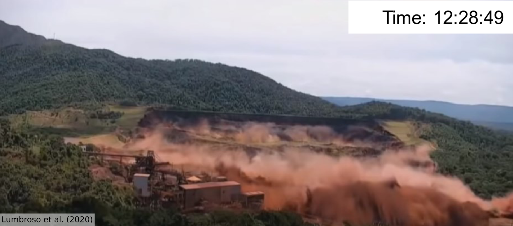


Numerical predictions in geotechnical engineering
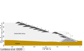
Constitutive models to define material-specific behaviour
\[
\bm{\dot\sigma} = \bm{f} \underbrace{\left( ... \right)}_{\mathclap{\text{state variables}}} \bm{\dot\varepsilon}
\]
Material models for geomaterials


- Constitutive models \[ \bm{\dot\sigma} = \bm{f} \left( ... \right) \bm{\dot\varepsilon} \]
- Typical state variables
- stress $\bm\sigma$ (or pressure)
- density $\varrho$
- additional state variables:
- fabric related
What is fabric?
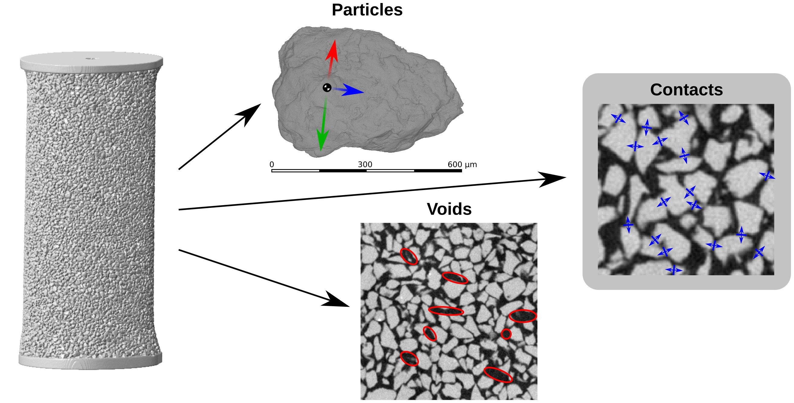
How to measure fabric changes?

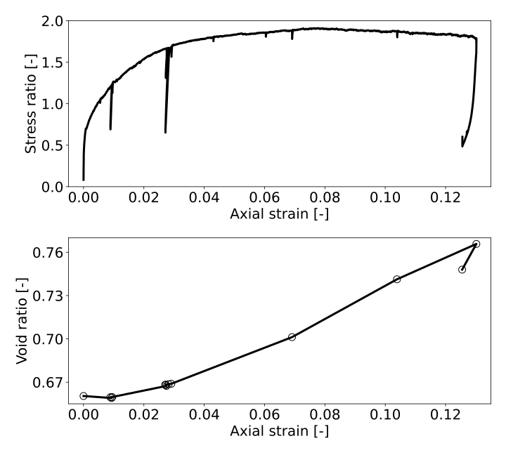
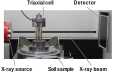
How to quantitatively determine fabric?
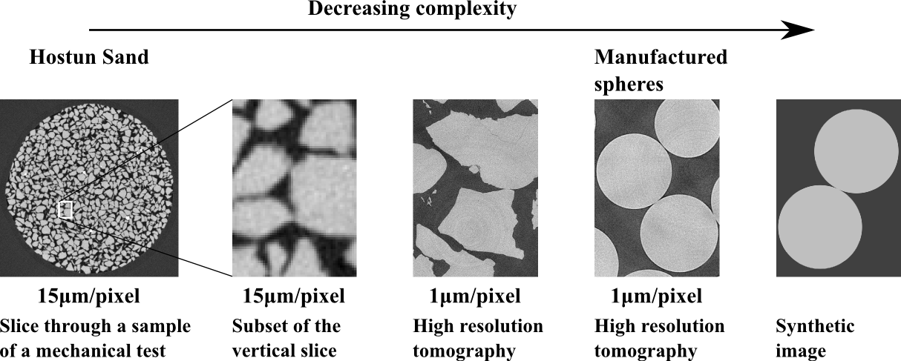
(Wiebicke et al., 2017)
(Stamati et al., 2020)
Fabric throughout a triaxial compression test
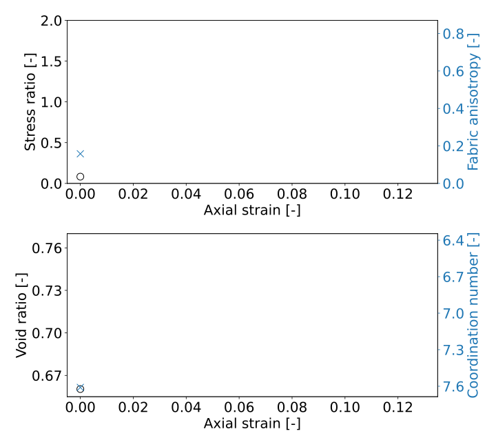
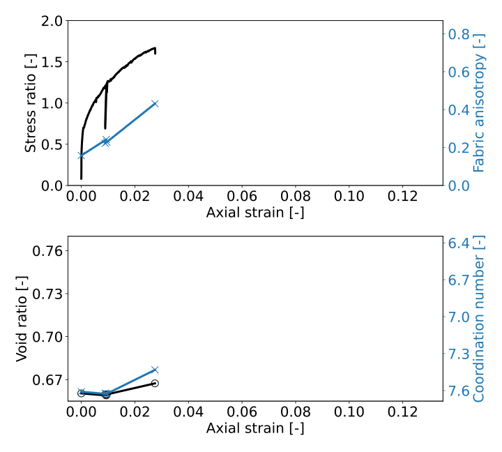
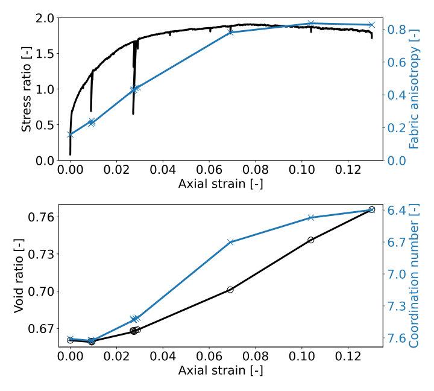
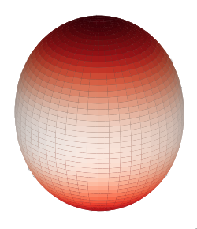
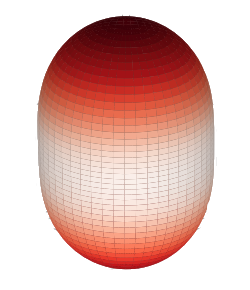
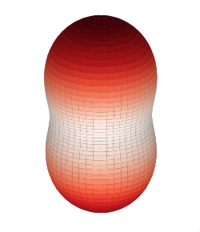
Fabric as a state variable ➙ Evolution law
\[
\dot{\bm{F}} = \bm{H} \left( \dot\varepsilon_s^p, \bm{\sigma}, \bm{F}, \rho \right)
\]
(Zhao et al. (2020))
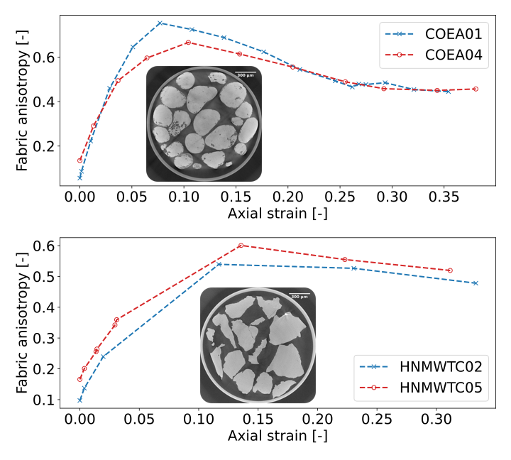
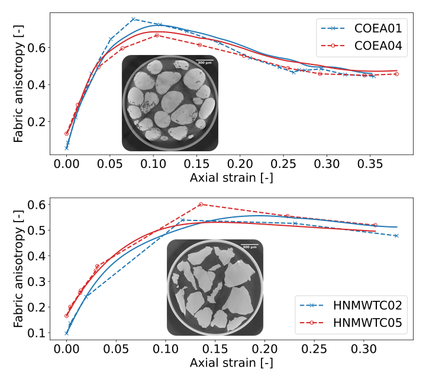
(Zhao et al. (2021))
Evolution of the heterogeneity of the state
Schmidt et al. (2022)


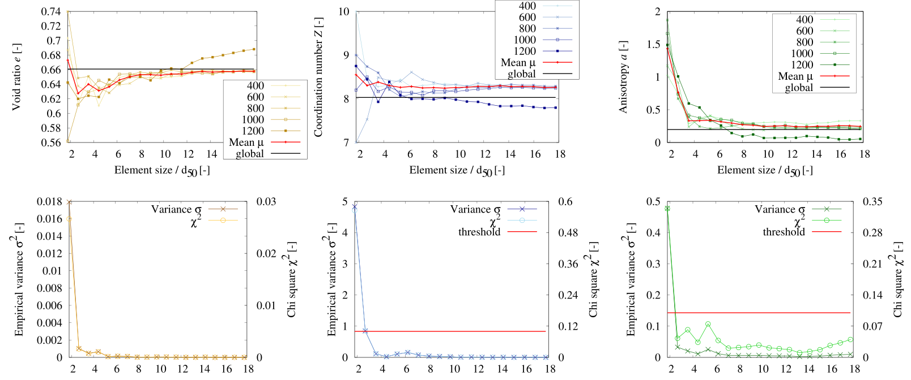
Evolution of the heterogeneity of the state
Schmidt et al. (2022)
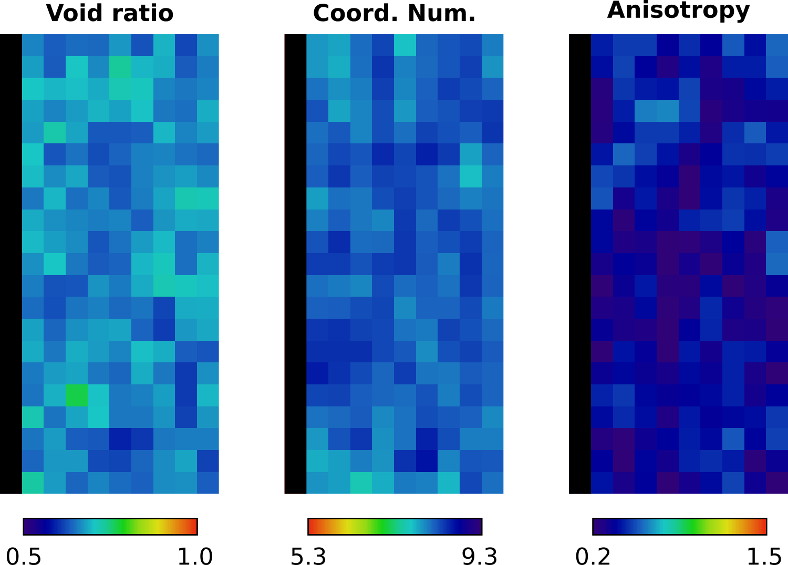
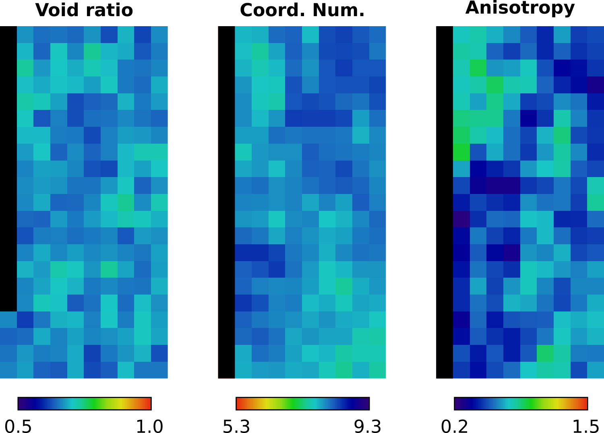
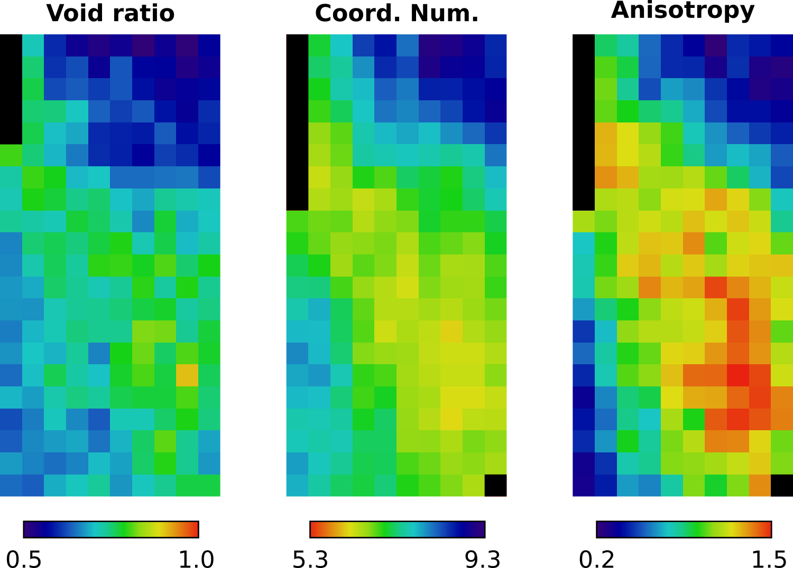
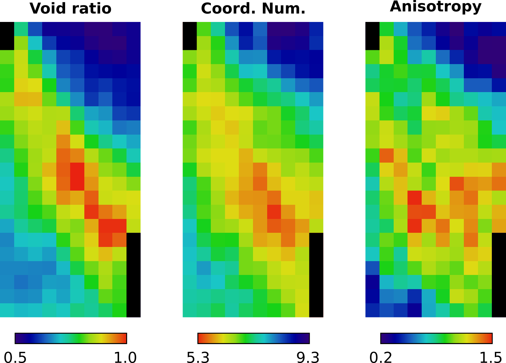
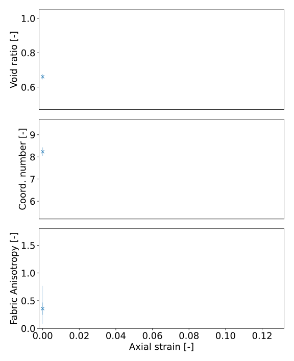
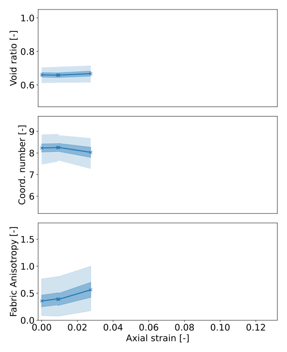
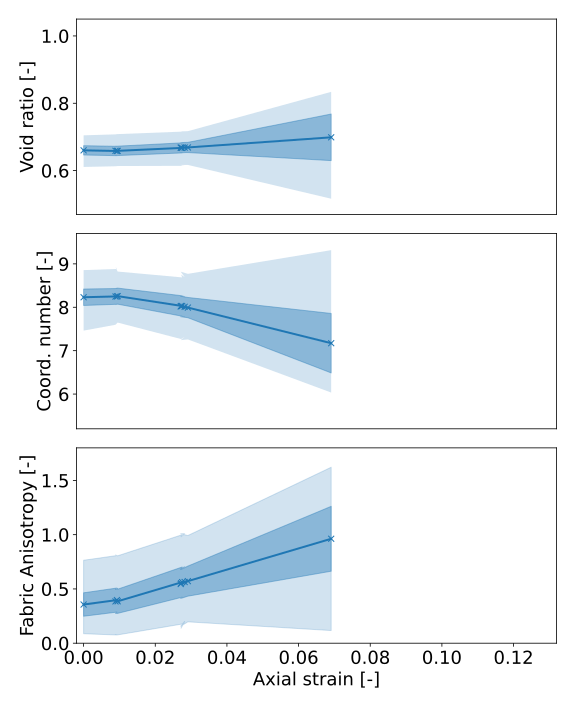
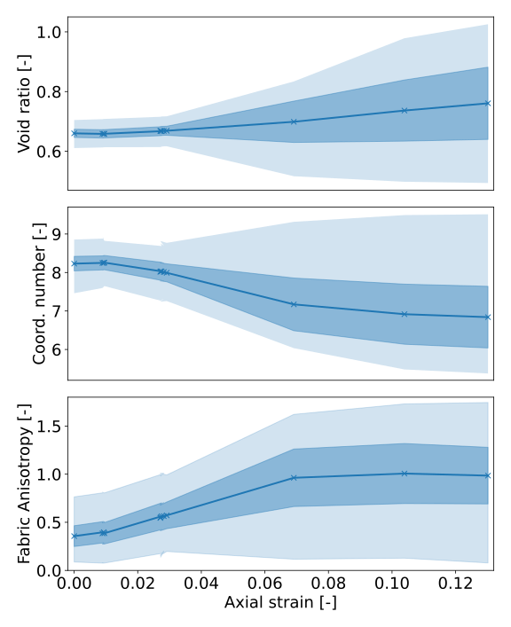
What about the fabric of clays?
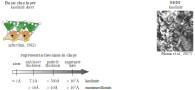
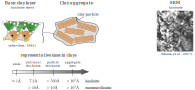

A new state variable
An analogy to thermal temperature (Jiang and Liu, 2009)
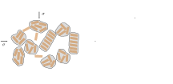
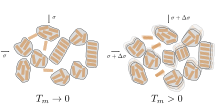

The hydrodynamic procedure
Lev Landau and co-workers (1960's)- Conservation of energy, momentum and mass
- Second law of thermodynamics
- Thermodynamic pressure-density relation
Mario Liu and co-workers (2000's)
- Onsager’s reciprocity of irreversible fluxes
- Vanishment of irreversible fluxes close to equilibrium
- Two scales of temperatures in heterogeneous media
- Two-stage irreversibility
The hydrodynamic procedure
Material state
- Internal energy density
- Thermodynamic pressure \[ p^T \equiv - \frac{\partial \left(u / \rho \right)}{\partial \left(1 / \rho\right)} \]
- Dissipative stress $$ \sigma^d_{ij} \equiv \sigma_{ij} - \sigma_{ij}^e - p^T \delta_{ij} $$
The hydrodynamic procedure
- Total entropy production / Thermodynamic
fluxes
and forces
Two-stage irreversibility (Jiang and Liu, 2009)\[ R + R_m = f_i \nabla_i T + f_i^m \nabla_i T_m + \sigma_{ij}^d\dot\varepsilon_{ij} + \sigma_{ij}^e\dot\varepsilon_{ij}^p \geq 0 \] \[ R + R_m = \textcolor{#f55431}{f_i} \textcolor{#2ac565}{\nabla_i T} + \textcolor{#f55431}{f_i^m} \textcolor{#2ac565}{\nabla_i T_m} + \textcolor{#f55431}{\sigma_{ij}^d} \textcolor{#2ac565}{\dot\varepsilon_{ij}} + \textcolor{#2ac565}{\sigma_{ij}^e} \textcolor{#f55431}{\dot\varepsilon_{ij}^p} \geq 0 \] \[ R_m = \textcolor{#f55431}{f_i^m} \textcolor{#2ac565}{\nabla_i T_m} + \textcolor{#f55431}{\sigma_{ij}^d} \textcolor{#2ac565}{\dot\varepsilon_{ij}} - \eta T_m^3 \\ R = \textcolor{#f55431}{f_i} \textcolor{#2ac565}{\nabla_i T} + \textcolor{#2ac565}{\sigma_{ij}^e} \textcolor{#f55431}{\dot\varepsilon_{ij}^p} + \eta T_m^3 \geq 0 \\ \] - Transport coefficients
for plastic strain rate (Onsager, 1931)
\[\begin{aligned} \textcolor{#f55431}{\dot\varepsilon_{ij}^p} &= \chi_{ijkl} ~ \textcolor{#2ac565}{\sigma_{ij}^e} \\ \begin{bmatrix} \dot\varepsilon_v^p \\ \dot\varepsilon_s^p \end{bmatrix} &= T_m \begin{bmatrix} \bar{a} & \bar{b} \\ \bar{b} & \bar{c} \end{bmatrix} \begin{bmatrix} p^e \\ q^e \end{bmatrix} \end{aligned}\] \[\begin{aligned} \textcolor{#f55431}{\dot\varepsilon_{ij}^p} &= \textcolor{#8653eb}{\chi_{ijkl}} ~ \textcolor{#2ac565}{\sigma_{ij}^e} \\ \begin{bmatrix} \dot\varepsilon_v^p \\ \dot\varepsilon_s^p \end{bmatrix} &= \textcolor{#8653eb}{ T_m \begin{bmatrix} \bar{a} & \bar{b} \\ \bar{b} & \bar{c} \end{bmatrix}} \begin{bmatrix} p^e \\ q^e \end{bmatrix} \end{aligned}\]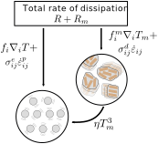
Model formulation
\[ \begin{bmatrix} \dot\varepsilon_v^p \\ \dot\varepsilon_s^p \end{bmatrix} = \textcolor{#8653eb}{ T_m \begin{bmatrix} \bar{a} & \bar{b} \\ \bar{b} & \bar{c} \end{bmatrix}} \begin{bmatrix} p^e \\ q^e \end{bmatrix} \]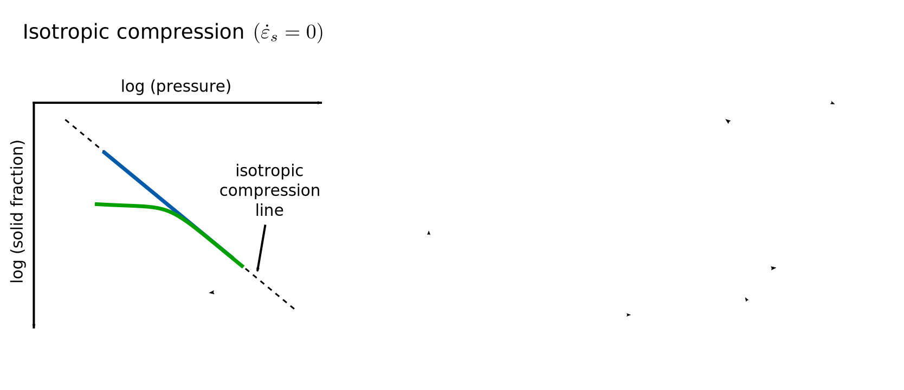 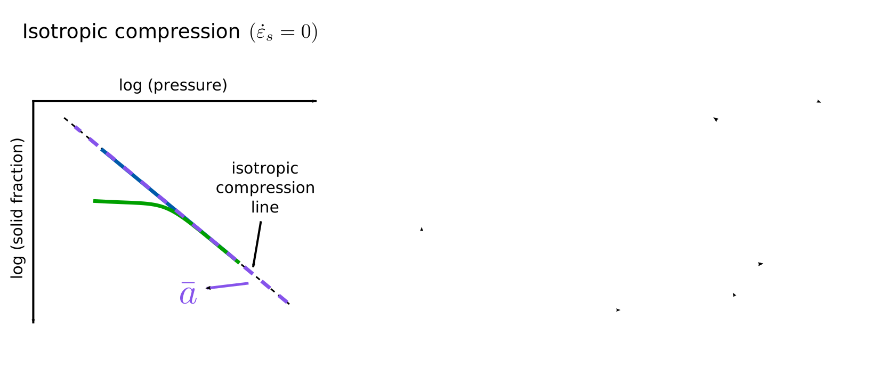 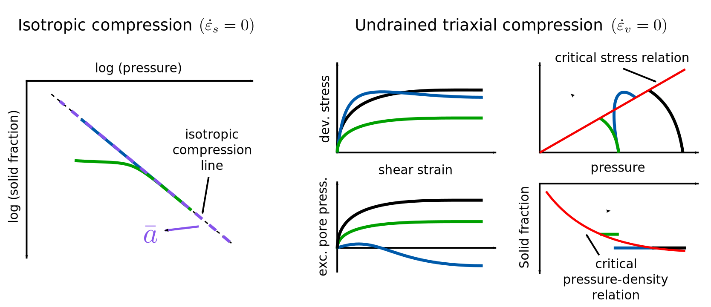 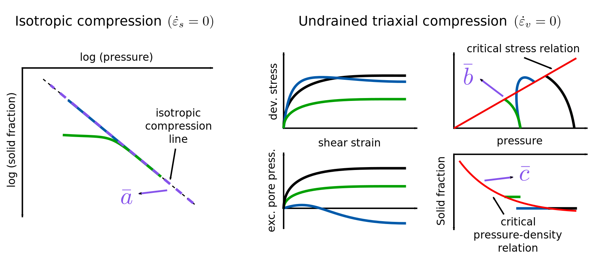The Model (Wiebicke & Einav, 2024)
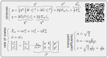Rate dependence & apparent rate independence?
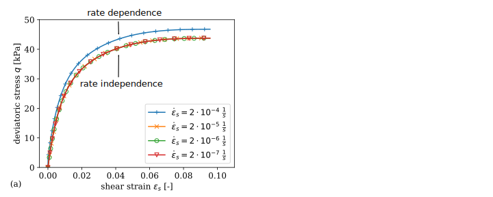 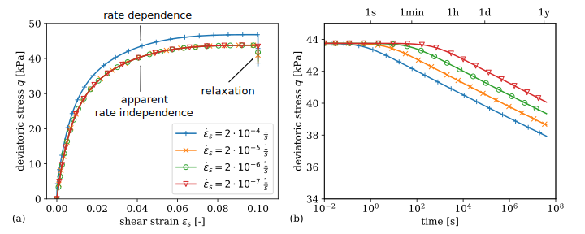Apparent rate independence?
Experiments by Lade and Karimpour (2014)
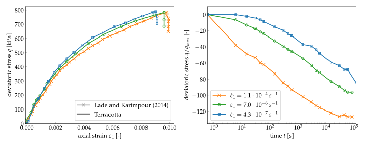
Predictions - Oedometric compression
Experiment from Krieg and Niemunis (1997) 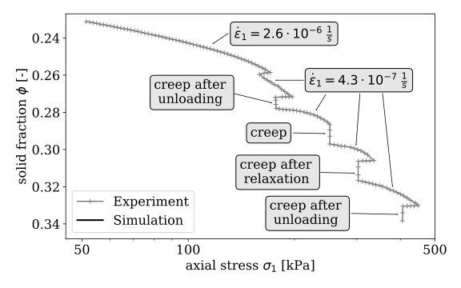 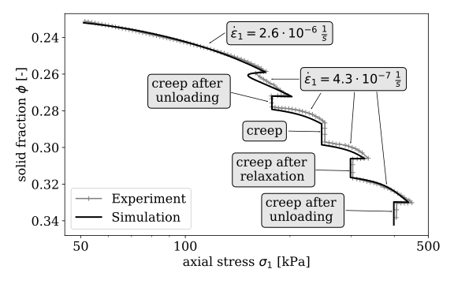
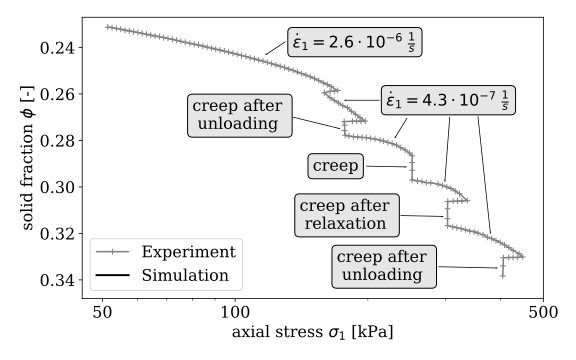 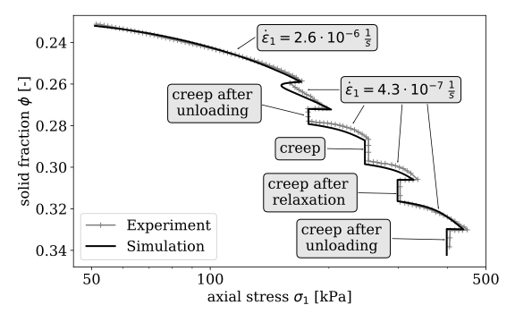So what?
Relevance of the State of Soils to Geotechnical Engineering
Continuation: Micromechanics at load reversal of granular soils
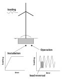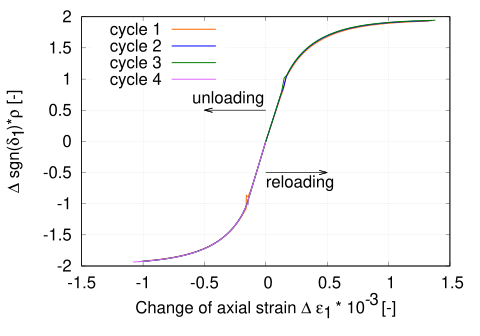Towards Numerical Modelling(Kawamoto et al., 2018)
Continuation: Clay hydrodynamics
- Elasticity
- Viscosity and transition solid ➙ fluid \[ \sigma_{ij} = \sigma^e_{ij} + \sigma^d_{ij} + p^T \delta_{ij} \]
- Multi-Physics couplings
- temperature
- pore-fluid chemistry
- Implementation in FEM and MPM codes
- Rainfall induced landslides
➙ subsequent mudflows - Climate-induced environmental changes
(Masi & Einav, 2025)
Nature (plant) based engineering
Modelling of civil structures
Pile load tests
(Wehr et al., 2013)
Quay walls(Fay, 2025)
(Weber, 2019)
Heterarchical modelling
(Marks et al., 2025)
Modelling of civil structures
(Mohiuddin, 2021)